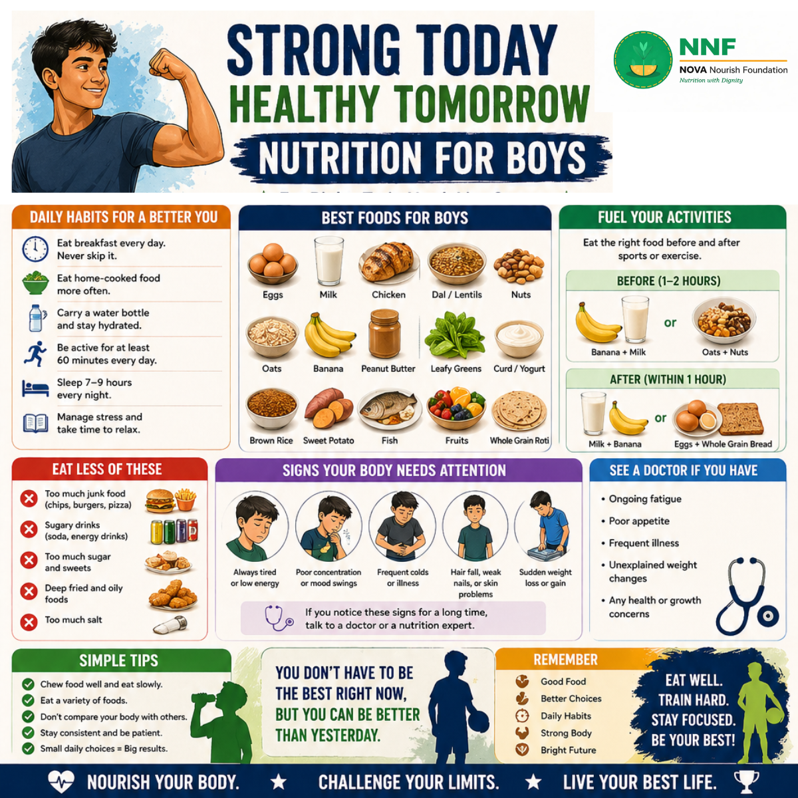
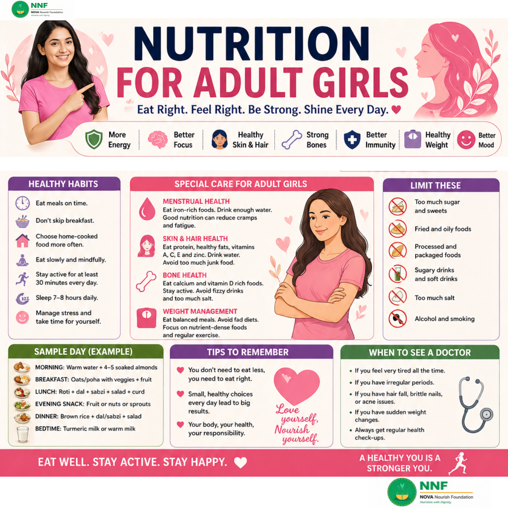
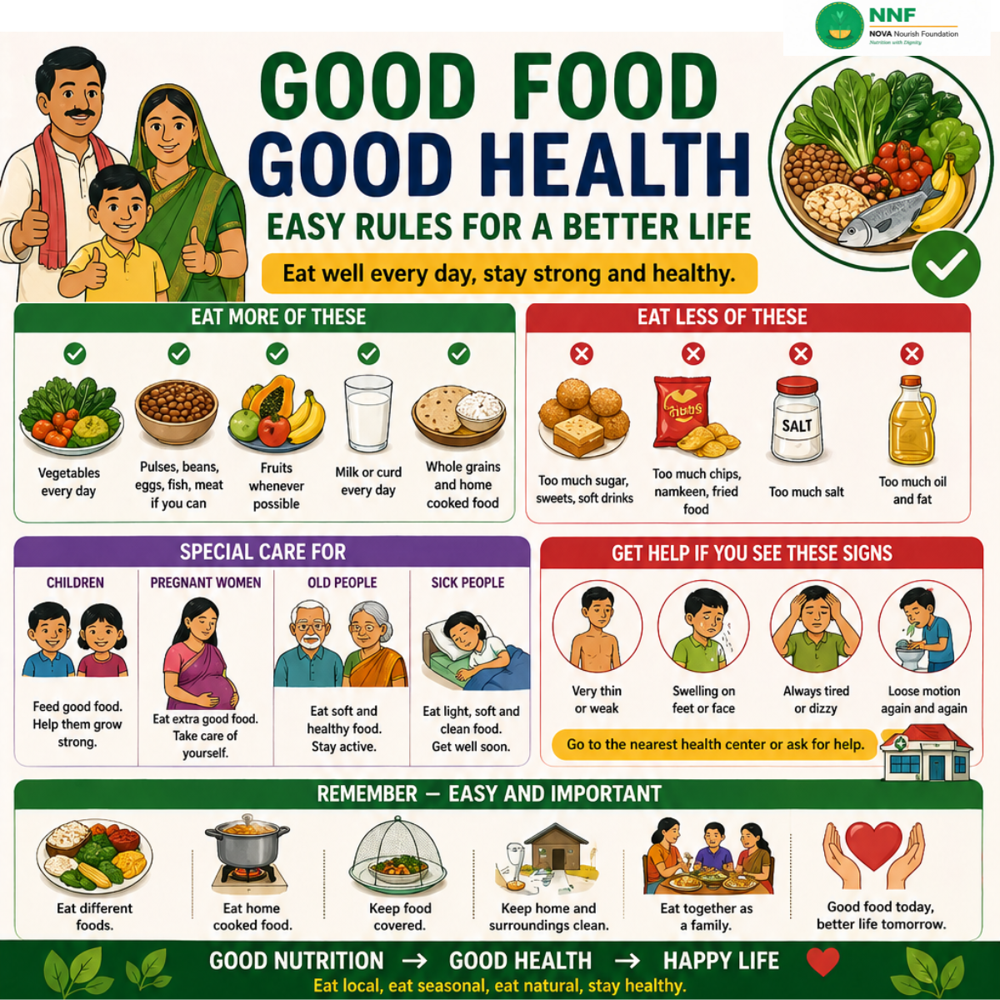
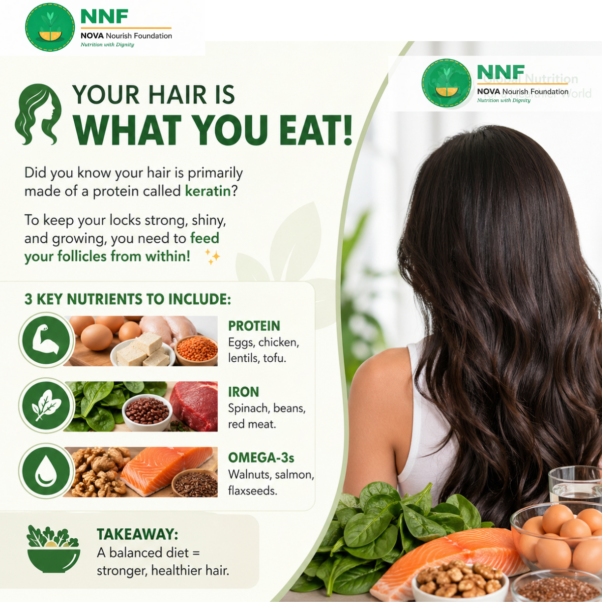
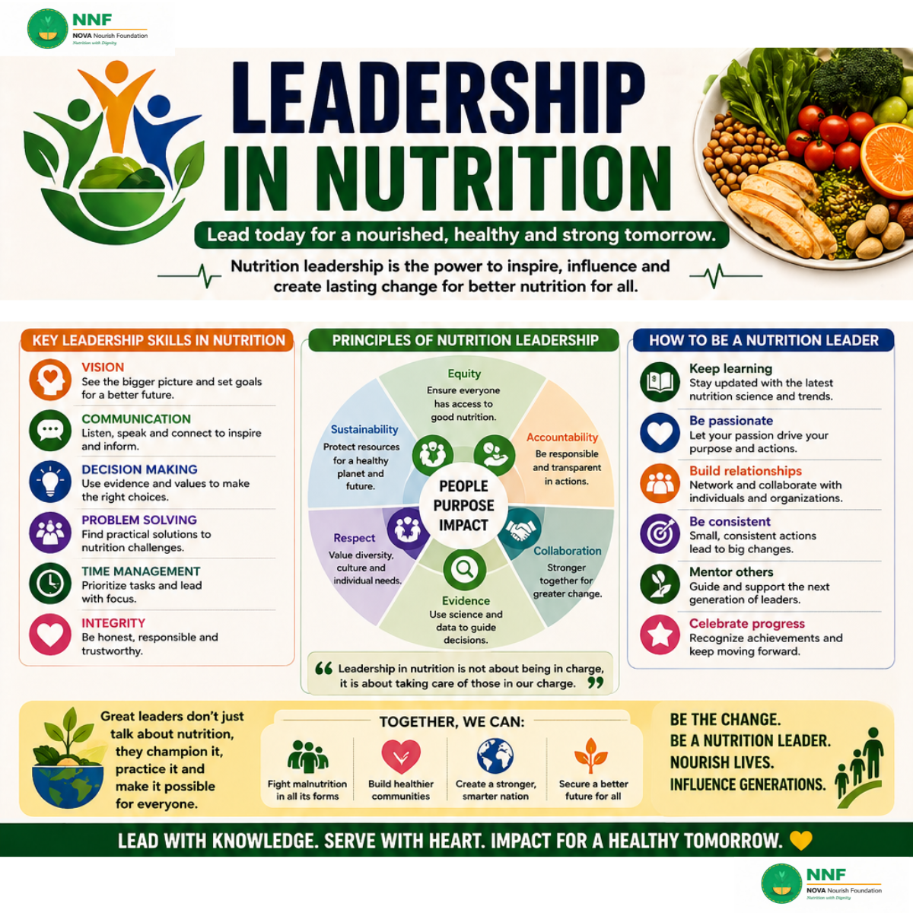

Evidence-based nutrition guides, health tips, and stories of the youth leaders reshaping Bagerhat. প্রমাণ-ভিত্তিক পুষ্টি নির্দেশিকা, স্বাস্থ্য টিপস এবং বাগেরহাটকে নতুন রূপ দেওয়া তরুণ নেতাদের গল্প।
Key nutrients, the healthy plate model, and daily habits every boy needs for strength, focus, and immunity.ছেলেদের শক্তি, মনোযোগ ও রোগ প্রতিরোধ ক্ষমতার জন্য প্রয়োজনীয় পুষ্টি ও স্বাস্থ্যকর অভ্যাস।

The best everyday foods, sports nutrition, warning signs, and practical daily habits for growing boys.বেড়ে ওঠা ছেলেদের জন্য সেরা খাবার, খেলাধুলার পুষ্টি এবং দৈনন্দিন অভ্যাস।
The complete adult nutrition guide: healthy plate model, essential nutrients, portion control, and lifestyle habits.প্রাপ্তবয়স্কদের পুষ্টির সম্পূর্ণ গাইড — সঠিক খাবার, পরিমাণ এবং স্বাস্থ্যকর জীবনযাপন।
Iron, calcium, vitamin B12, menstrual health, skin care — the complete nutrition guide for girls and women.আয়রন, ক্যালসিয়াম, ভিটামিন B12 এবং বিশেষ যত্ন সহ মেয়েদের সম্পূর্ণ পুষ্টি গাইড।

Daily habits, sample meal plans, and healthy limits that help adult girls stay energetic, confident, and strong.দৈনন্দিন অভ্যাস ও খাদ্যতালিকা যা মেয়েদের সুস্থ, আত্মবিশ্বাসী ও শক্তিশালী রাখে।
Simple, practical nutrition rules every family can follow: the six food groups, daily habits, and clean living.প্রতিটি পরিবার অনুসরণ করতে পারে এমন সহজ পুষ্টির নিয়ম — ছয়টি খাদ্য গ্রুপ ও দৈনন্দিন অভ্যাস।

A clear visual guide to making smarter food choices for the whole family — what to eat more of and what to avoid.পুরো পরিবারের জন্য স্বাস্থ্যকর খাদ্যাভ্যাস গড়ে তোলার সহজ গাইড।
How food, sleep, exercise, and daily habits powerfully impact your emotional and psychological well-being.খাদ্য, ঘুম, ব্যায়াম ও দৈনন্দিন অভ্যাস কীভাবে মানসিক সুস্থতাকে প্রভাবিত করে।

Protein, iron, and omega-3 fatty acids are the key nutrients for strong, shiny, healthy hair — from within.প্রোটিন, আয়রন ও ওমেগা-৩ — সুন্দর, শক্তিশালী চুলের জন্য প্রয়োজনীয় পুষ্টি।
How youth leaders can champion better nutrition, inspire their communities, and create lasting change in Bagerhat.তরুণ নেতারা কীভাবে পুষ্টির পক্ষে কথা বলে সম্প্রদায়ে ইতিবাচক পরিবর্তন আনতে পারে।

Equity, sustainability, collaboration, and evidence — the core leadership principles behind NNF's mission.সমতা, টেকসইতা, সহযোগিতা ও প্রমাণ — NNF-এর পুষ্টি নেতৃত্বের মূল নীতি।